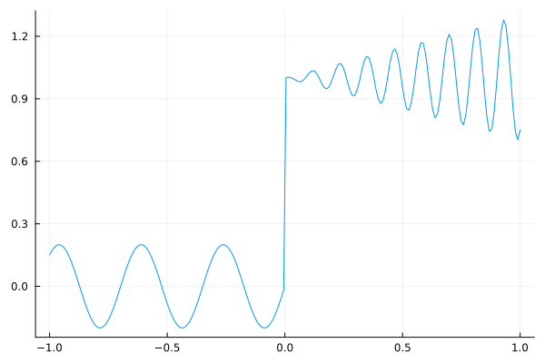
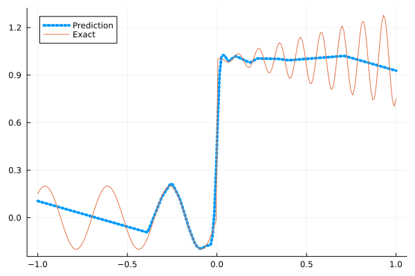
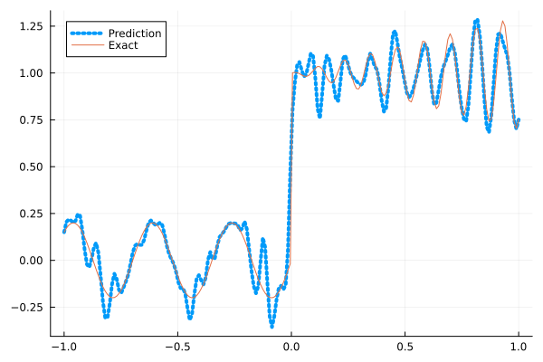
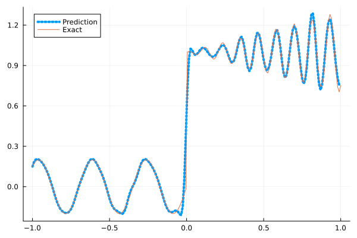
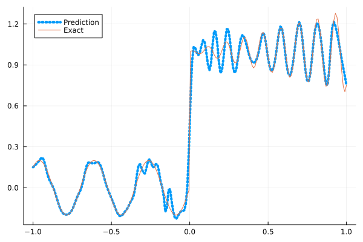
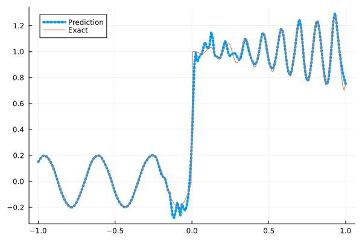

Fitting a nonlinear discontinuous function
This example is taken from here. However, we do not use adaptive activation functions. Instead, we show that using suitable non-parametric activation functions immediately performs better.
Consider the following discontinuous function with discontinuity at $x=0$:
\[u(x)= \begin{cases}0.2 \sin (18 x) & \text { if } x \leq 0 \\ 1+0.3 x \cos (54 x) & \text { otherwise }\end{cases}\]
The domain is $[-1,1]$. The number of training points used is 50.
Import pacakges
using Lux, Sophon
using NNlib, Optimisers, Plots, Random, StatsBase, ZygoteDataset
function u(x)
if x <= 0
return 0.2 * sin(18 * x)
else
return 1 + 0.3 * x * cos(54 * x)
end
end
function generate_data(n=50)
x = reshape(collect(range(-1.0f0, 1.0f0, n)), (1, n))
y = u.(x)
return (x, y)
endgenerate_data (generic function with 2 methods)Let's visualize the data.
x_train, y_train = generate_data(50)
x_test, y_test = generate_data(200)
Plots.plot(vec(x_test), vec(y_test),label=false)
Naive Neural Nets
First we demonstrate show naive fully connected neural nets could be really bad at fitting this function.
model = FullyConnected((1,50,50,50,50,1), relu)Chain(
layer_1 = Dense(1 => 50, relu), # 100 parameters
layer_2 = Dense(50 => 50, relu), # 2_550 parameters
layer_3 = Dense(50 => 50, relu), # 2_550 parameters
layer_4 = Dense(50 => 50, relu), # 2_550 parameters
layer_5 = Dense(50 => 1), # 51 parameters
) # Total: 7_801 parameters,
# plus 0 states, summarysize 80 bytes.Train the model
function train(model, x, y)
ps, st = Lux.setup(Random.default_rng(), model)
opt = Adam()
st_opt = Optimisers.setup(opt,ps)
function loss(model, ps, st, x, y)
y_pred, _ = model(x, ps, st)
mes = mean(abs2, y_pred .- y)
return mes
end
for i in 1:2000
gs = gradient(p->loss(model,p,st,x,y), ps)[1]
st_opt, ps = Optimisers.update(st_opt, ps, gs)
if i % 100 == 1 || i == 2000
println("Epoch $i || ", loss(model,ps,st,x,y))
end
end
return ps, st
endtrain (generic function with 1 method)Plot the result
@time ps, st = train(model, x_train, y_train)
y_pred = model(x_test,ps,st)[1]
Plots.plot(vec(x_test), vec(y_pred),label="Prediction",line = (:dot, 4))
Plots.plot!(vec(x_test), vec(y_test),label="Exact",legend=:topleft)Epoch 1 || 1.334430297533472
Epoch 101 || 0.016486140959880144
Epoch 201 || 0.01582655668111152
Epoch 301 || 0.015727784483483047
Epoch 401 || 0.015641615377499515
Epoch 501 || 0.015528666990451665
Epoch 601 || 0.015359030851845805
Epoch 701 || 0.015118811411475554
Epoch 801 || 0.014590550935202234
Epoch 901 || 0.013956478528936453
Epoch 1001 || 0.013518001162420636
Epoch 1101 || 0.013265515985416849
Epoch 1201 || 0.013177960039288929
Epoch 1301 || 0.013104137496255686
Epoch 1401 || 0.013090018152855612
Epoch 1501 || 0.013131109473432682
Epoch 1601 || 0.013137269408882242
Epoch 1701 || 0.013113577756169335
Epoch 1801 || 0.013144280769564127
Epoch 1901 || 0.013112211754539409
Epoch 2000 || 0.013048405855086837
9.979518 seconds (13.16 M allocations: 1.484 GiB, 5.98% gc time, 91.76% compilation time)
Siren
We use four hidden layers with 50 neurons in each.
model = Siren(1,50,50,50,50,1; omega = 30f0)Chain(
layer_1 = Dense(1 => 50, sin), # 100 parameters
layer_2 = Dense(50 => 50, sin), # 2_550 parameters
layer_3 = Dense(50 => 50, sin), # 2_550 parameters
layer_4 = Dense(50 => 50, sin), # 2_550 parameters
layer_5 = Dense(50 => 1), # 51 parameters
) # Total: 7_801 parameters,
# plus 0 states, summarysize 88 bytes.@time ps, st = train(model, x_train, y_train)
y_pred = model(x_test,ps,st)[1]
Plots.plot(vec(x_test), vec(y_pred),label="Prediction",line = (:dot, 4))
Plots.plot!(vec(x_test), vec(y_test),label="Exact",legend=:topleft)Epoch 1 || 1.331091414239708
Epoch 101 || 0.001380076405175558
Epoch 201 || 7.098060192336102e-5
Epoch 301 || 5.277654823236822e-6
Epoch 401 || 4.538845422063633e-7
Epoch 501 || 3.08175468773677e-8
Epoch 601 || 1.4371600233933837e-9
Epoch 701 || 4.805469062484619e-11
Epoch 801 || 2.509794808521427e-12
Epoch 901 || 4.5350239446278256e-13
Epoch 1001 || 8.800152591076843e-14
Epoch 1101 || 4.073130740444886e-14
Epoch 1201 || 5.386507218712085e-14
Epoch 1301 || 1.9534384234079166e-14
Epoch 1401 || 4.545076235130045e-14
Epoch 1501 || 7.127626597720574e-14
Epoch 1601 || 3.113275299378803e-14
Epoch 1701 || 3.406393937218714e-14
Epoch 1801 || 6.501625988546623e-14
Epoch 1901 || 8.762047596911809e-14
Epoch 2000 || 5.643004375841345e-14
5.135644 seconds (8.16 M allocations: 1.298 GiB, 6.84% gc time, 84.02% compilation time)
As we can see the model overfits the data, and the high frequencies cannot be optimized away. We need to tunning the hyperparameter omega
model = Siren(1,50,50,50,50,1; omega = 10f0)Chain(
layer_1 = Dense(1 => 50, sin), # 100 parameters
layer_2 = Dense(50 => 50, sin), # 2_550 parameters
layer_3 = Dense(50 => 50, sin), # 2_550 parameters
layer_4 = Dense(50 => 50, sin), # 2_550 parameters
layer_5 = Dense(50 => 1), # 51 parameters
) # Total: 7_801 parameters,
# plus 0 states, summarysize 88 bytes.@time ps, st = train(model, x_train, y_train)
y_pred = model(x_test,ps,st)[1]
Plots.plot(vec(x_test), vec(y_pred),label="Prediction",line = (:dot, 4))
Plots.plot!(vec(x_test), vec(y_test),label="Exact",legend=:topleft)Epoch 1 || 1.9418075624703872
Epoch 101 || 0.009575751013817045
Epoch 201 || 0.006956195185837345
Epoch 301 || 0.005456480607201144
Epoch 401 || 0.004334263709581157
Epoch 501 || 0.0033075766425704443
Epoch 601 || 0.0024420523807261326
Epoch 701 || 0.0017900949422869103
Epoch 801 || 0.0012750695438562586
Epoch 901 || 0.0008800428495101942
Epoch 1001 || 0.000586175810608938
Epoch 1101 || 0.0003724781538939343
Epoch 1201 || 0.000227819639854355
Epoch 1301 || 0.0001403643953285618
Epoch 1401 || 9.275971580631313e-5
Epoch 1501 || 6.764823535097788e-5
Epoch 1601 || 5.351030962726124e-5
Epoch 1701 || 4.4601598683184864e-5
Epoch 1801 || 3.8392260679566455e-5
Epoch 1901 || 3.373686271516e-5
Epoch 2000 || 3.009049301631526e-5
0.754327 seconds (1.15 M allocations: 892.491 MiB, 9.12% gc time)
Gaussian activation function
We can also try using a fully connected net with the gaussian activation function.
model = FullyConnected((1,50,50,50,50,1), gaussian)Chain(
layer_1 = Dense(1 => 50, gaussian), # 100 parameters
layer_2 = Dense(50 => 50, gaussian), # 2_550 parameters
layer_3 = Dense(50 => 50, gaussian), # 2_550 parameters
layer_4 = Dense(50 => 50, gaussian), # 2_550 parameters
layer_5 = Dense(50 => 1), # 51 parameters
) # Total: 7_801 parameters,
# plus 0 states, summarysize 80 bytes.@time ps, st = train(model, x_train, y_train)
y_pred = model(x_test,ps,st)[1]
Plots.plot(vec(x_test), vec(y_pred),label="Prediction",line = (:dot, 4))
Plots.plot!(vec(x_test), vec(y_test),label="Exact",legend=:topleft)Epoch 1 || 0.3218272421695863
Epoch 101 || 0.006400960317443092
Epoch 201 || 0.005769714028992223
Epoch 301 || 0.004940279014362809
Epoch 401 || 0.004061561633645763
Epoch 501 || 0.0031133684041578925
Epoch 601 || 0.0019085779223506495
Epoch 701 || 0.0009564787842968947
Epoch 801 || 1.9652341880300512e-6
Epoch 901 || 3.6125007962368236e-9
Epoch 1001 || 3.6596385939818304e-12
Epoch 1101 || 1.0793676422918763e-13
Epoch 1201 || 8.817307834217614e-14
Epoch 1301 || 1.1530795391437341e-5
Epoch 1401 || 3.216459538329859e-8
Epoch 1501 || 1.3798473412692953e-12
Epoch 1601 || 8.94921453695633e-14
Epoch 1701 || 2.370235171149587e-13
Epoch 1801 || 0.0006736745306076625
Epoch 1901 || 2.289597537088117e-8
Epoch 2000 || 1.8747851930834946e-12
4.880390 seconds (7.29 M allocations: 1.252 GiB, 6.43% gc time, 80.88% compilation time)
Quadratic activation function
quadratic is much cheaper to compute compared to the Gaussain activation function.
model = FullyConnected((1,50,50,50,50,1), quadratic)Chain(
layer_1 = Dense(1 => 50, quadratic), # 100 parameters
layer_2 = Dense(50 => 50, quadratic), # 2_550 parameters
layer_3 = Dense(50 => 50, quadratic), # 2_550 parameters
layer_4 = Dense(50 => 50, quadratic), # 2_550 parameters
layer_5 = Dense(50 => 1), # 51 parameters
) # Total: 7_801 parameters,
# plus 0 states, summarysize 80 bytes.@time ps, st = train(model, x_train, y_train)
y_pred = model(x_test,ps,st)[1]
Plots.plot(vec(x_test), vec(y_pred),label="Prediction",line = (:dot, 4))
Plots.plot!(vec(x_test), vec(y_test),label="Exact",legend=:topleft)Epoch 1 || 1.016655560192317
Epoch 101 || 0.0068494591994864365
Epoch 201 || 0.006286802677161723
Epoch 301 || 0.005852339100375332
Epoch 401 || 0.0054212542902336526
Epoch 501 || 0.004970414680012049
Epoch 601 || 0.00450096239778921
Epoch 701 || 0.003990342835881271
Epoch 801 || 0.0034018618491317132
Epoch 901 || 0.002614555758675372
Epoch 1001 || 0.0015652073831725942
Epoch 1101 || 0.0006555891693522664
Epoch 1201 || 0.0001545782859855616
Epoch 1301 || 2.0863048317960086e-5
Epoch 1401 || 4.05568637954219e-6
Epoch 1501 || 1.6378982977774628e-6
Epoch 1601 || 7.944765162563887e-7
Epoch 1701 || 3.8364874306645023e-7
Epoch 1801 || 1.7641858388614086e-7
Epoch 1901 || 4.51643522254119e-7
Epoch 2000 || 3.2762983758977524e-8
4.324975 seconds (7.04 M allocations: 1.236 GiB, 6.81% gc time, 87.07% compilation time)
Conclusion
"Neural networks suppresse high frequency components" is a misinterpretation of the spectral bias. The accurate way of putting it is that the lower frequencies in the error are optimized first in the optimization process. This can be seen in Siren's example of overfitting data, where you do not have implicit regularization. The high frequency in the network will never go away because it has fitted the data perfectly.
Mainstream attributes the phenomenon that neural networks "suppress" high frequencies to gradient descent. This is not the whole picture. Initialization also plays an important role. Siren mitigats this problem by initializing larger weights in the first layer, while activation functions such as gassian have large enough gradients and sufficiently large support of the second derivative with proper hyperparameters. Please refer to Vincent Sitzmann, Julien Martel, Alexander Bergman, David Lindell, Gordon Wetzstein (2020), Sameera Ramasinghe, Simon Lucey (2021) and Sameera Ramasinghe, Lachlan MacDonald, Simon Lucey (2022) if you want to dive deeper into this.